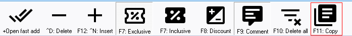
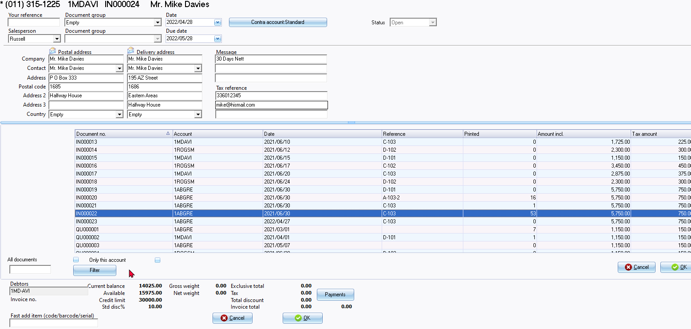
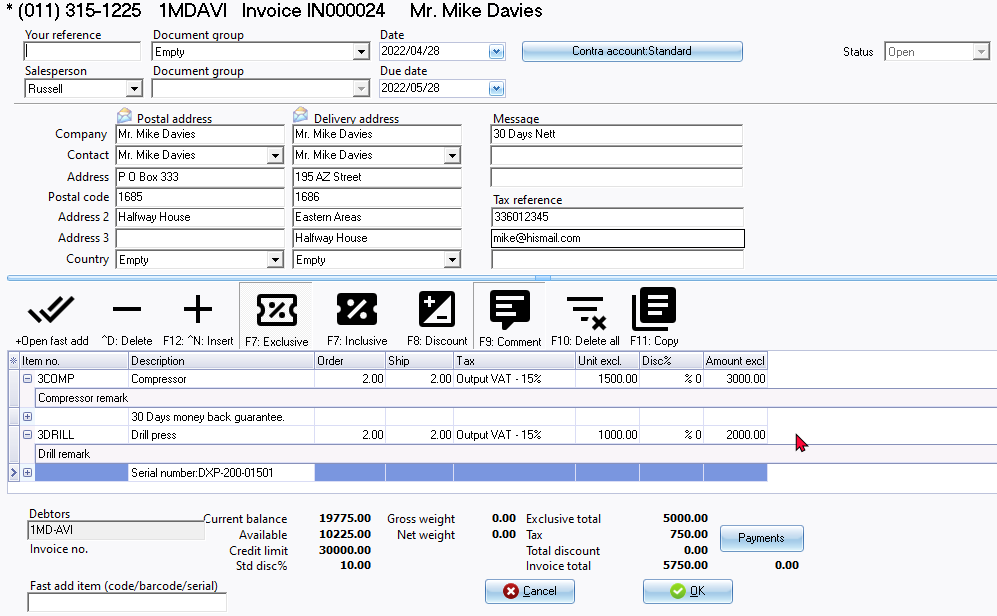

Copy transactions / comments - Documents
This feature allows you to copy the transactions and the comments, if any, entered in another document into the current document.
|
|
In addition to this option, you may also copy selected documents from the following context menu options on the Document entry grid screen:
|

To copy transactions and comments from a selected document to another document:
- Create a new document or edit a selected document.
- Click on the F11:Copy icon.

- The options to select an existing document to copy from, is as follows:
 - Select the document number and the account code of the debtor (customer / client) (if it is Invoices, Credit notes or Quotes), or the document number and the account code of your creditor (supplier / vendor) (Purchase, Supplier return documents or Orders).
|
|
By default, the "Only this account" option will be selected (ticked). This means that only those documents generated for the selected debtor (customer / client) or the creditor (supplier / vendor) in the Document header will be listed. You may filter and search for documents using the following values:
|

|
|
If the "All documents" option is selected (ticked), take note of the document numbers: The document numbers for Invoices, Credit notes, Quotes, Purchases, Supplier returns and Orders as prefixed in the Documents setup (Setup ribbon), makes it easy to identify the document type. In addition to these standard document numbers, the following documents may be included:
It is recommended that you do not select these documents. |

- Select a document on the list.
- Click on the OK button. All the transactions as well as any comments and remarks, if any, will be copied into the current document.

|
|
You may need to:
|
|
|
This feature can only be used to copy from sales documents for debtors (customers /clients) (i.e. Invoices, Credit notes and Quotes) and purchase documents for creditors (suppliers) (i.e. Purchase, Supplier returns and Orders).
|